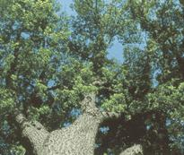
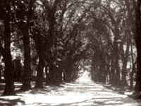
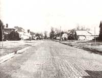
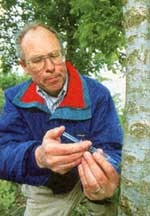
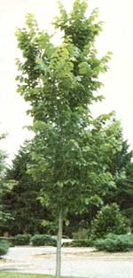

Scientists create Dutch elm disease-resistant hybrids.
The American elm, long absent from cities and towns across the U.S. will soon line streets and parks with its majestic features once again, hope researchers at the U.S. National Arboretum who introduced two new varieties of Dutch elm disease-tolerant American elm trees in June.
The new trees, named Valley Forge and New Harmony elm, were developed by a team of scientists at the arboretum after more than 20 years of research.
At one time, "American elm trees were the main landscape tree in cities and towns," said Alden Townsend, the National Arboretum plant geneticist who worked on the project.
The American elm (Ulmus americana), which can grow more than 100 feet tall, is noted for its hardiness and tolerance to stresses in urban environments. It can withstand drought, air pollution, and deicing road salts, says Thomas Elias, director of the arboretum. The tree also supports many kinds of wildlife and has a spreading canopy that offers shade.
Since the 1930s, Dutch elm disease, caused by a deadly fungus (Ophiostoma ulmi), has destroyed more than 80 million American elm trees, wiping out 90 percent of the nation's supply, according to the Agricultural Research Service (ARS) of the U.S. Department of Agriculture.
The Hardwood Research Council notes that the Dutch were the first to recognize and document the fungus that causes the disease, but the disease did not originate in the Netherlands.
In the United States, trees infected with the disease were discovered in the Ohio River Valley in 1932 after a shipment of logs from France carried the fungus from Europe. Leaves on trees infected with the disease turn yellow, then brown, and show other signs of wilting, according to the ARS.
The Dutch elm disease fungus is carried from tree to tree by the bark elm beetle. The fungus quickly moves into the waterconducting vessels of the elm, clogging the flow of water and nutrients to the tree, according to the Elm Research Institute, a nonprofit institute based in Harrisville, New Hampshire.
The Valley Forge and New Harmony elms were chosen, through a screening process that began at the arboretum in the 1930s, as the trees that proved to best withstand repeated inoculations of the Dutch elm fungus. Although the trees are not completely immune to the disease, they have shown "unusually high levels of tolerance to the fungus that causes the disease," says Floyd Horn, administrator of the ARS.
According to the ARS, more than 100 rooted cuttings of the Valley Forge and New Harmony elms were distributed in the last two years to tree nurseries, experiment stations, and arboreta. Wholesale nurseries will propagate the trees for sale by late 1997 or 1998, while retail nurseries should have them in 1999.
"Valley Forge and New Harmony elms will be the first commercially available, Dutch elm-tolerant American elm trees," says Elias. However, they are not the first Dutch elm disease-tolerant American elm trees to be distributed in the U.S.
In 1983, a third type of Dutch elm disease-tolerant American elm, called the Liberty elm, was developed through genetic breeding by the University of Wisconsin under a grant from the Elm Research Institute. Since 1984, the institute has propagated and distributed over 250,000 Liberty elms to its membership, which comprises individuals, communities, schools, and universities.
"A hundred million trees have died from Dutch elm disease, and in many towns it continues to be a problem," says Yvonne Spalthoff, assistant director of the Elm Research Institute.
"The Liberty elm is very resistant to Dutch elm disease;" she says. "The loss rate stands at .01 percent, which is minimal."
The internal structure of the Liberty elm is slightly different from that of the original American elm, Spalthoff says.
"Due to its unique cell structure, the new elm is capable of walling off the fungus. Phytoalexins restrict the growth of the fungus.
" Though many researchers have created Dutch elm disease-tolerant hybrid elm varieties from Asiatic and European elms, Spalthoff says, "Hybrid trees differ in appearance from the classic American elm that people remember.
The appearance of hybrids is not the same as the tall, graceful, vase-shaped purebred American elm. They tend to be shorter in stature and have smaller foliage:' But with the campaign to restore the elm to towns across the nation, the American elm may very well be saved.
FEATHER DIAPERS?
Chicken feathers may soon make their way into your home disguised as household products.
Scientists at the U.S. Department of Agriculture have discovered a new way to convert the poultry-processing by-product into a fiber that can be used in place of wood pulp and synthetic fibers, such as plastics or nylon, in some products.
"The new fiber separation process uses less water, energy, and chemicals than for other fibers;" said Dr. Walter Schmidt, a research chemist at the Agricultural Research Service (ARS) of the USDA who started the project three years ago. While studying animal fibers, Schmidt noticed that chicken feathers had very rugged properties.
The Liberty. "Once ground into a powder, it has physical properties similar to wood pulp," Schmidt says. "I thought maybe I could make paper out of it, and it worked.
" "Feather fibers can be used to make paper," he says. But "if all the feathers in the U.S. were used to make paper, it would only make up 1 percent of the paper we use. It would be used more for specialty papers because it has some very nice properties," Schmidt says. "The fibers give paper an unusual texture and dying properties. The fibers are also very strong. Paper made from it can be recycled over and over again, whereas if wood fibers are used, some of the fiber quality is lost.
" Feather fibers have many qualities that make them superior to wood pulp and synthetic fibers, including higher absorbency, as feather fibers distribute moisture more evenly. Feather fibers are biodegradable and can be composted, whereas fibers made of plastic contain chemicals that can stay around for 100 years. Feather fibers are comparable in price to wood pulp and cheaper than synthetic fibers.
In September 1993, almost a year after Schmidt's research began, the ARS signed a cooperative research and development agreement with Perdue Farms, Inc., based in Salisbury, Maryland. Under the agreement, Perdue is the exclusive licensee of the process developed by the ARS to convert chicken feathers into fiber. (The patent for the pro cess is pending.) The project, however, is still very much in the research phase, and the use of feather fibers in a marketable product may be years away. The fibers are expected to be used first in disposable diapers, feminine absorbent pads, and hospital wipes. Later uses may include handmade specialty paper and paper air filters for cars and home furnaces. Further down the road, the scientists expect to be able to combine them with fiberglass to make car parts such as dashboards, interior panels, and parts of the glove compartment.
"The question is whether it will ever be practical," says Richard Auletta, spokesman for Perdue Farms. "You can make paper out of gold, too, but the cost of doing [it would be] so prohibitive that there is no market for it.
" Research to make useful products from the feather fiber is now under way at Lixi, Inc., a manufacturer of disposable hygiene products based in Downers Grove, Illinois. Under an agreement with Perdue, Lixi receives the fiber as raw material and uses it in developing baby diapers, wipes, and feminine hygiene products, said Joseph Pascente, president of Lixi. These products are currently made from pulp and synthetic fibers like polyester or a blend of the two types of fibers.
Material scientists and designers at Lixi have already come up with a new type of diaper made from the feather fiber that Pascente says is more efficient because it weighs less and holds more. The products are being tested right now and may be available by the end of this year.
|
 Gillet Avenue in Waukegan, Illinois, before... |
 After the attack of Dutch elm disease |
 Scientist Alden Townsend inoculates an elm. |
|
 The Liberty |
 |
|